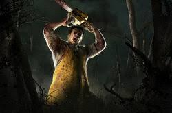

El haramball es una táctica deportiva exageradamente defensiva, trata de ganar partidos con marcadores muy ajustados como 1-0 o 2-0 centrandose en marcar el primer gol en el menor tiempo posible y luego jugar de la manera más defensiva posible. Mucha gente considera esto como el "anti-futbol" al perder toda la esencia del propio deporte.
El haramball en esencia al jugar al DBD es en esencia similar, pues se trata de tirar y colgar al primer survi que encuentres en el menor tiempo posible y alejarte lo mínimo posible para que la función de "Anti-campeo" no se ejecute y se pueda desenganchar solo. Haciendo esto sueles asegurarte de por lo menos que fasee el estado de gancho y que cuando lo descuelguen puedas terminar con el superviviento de manera rápida y con el menor tiempo posible.
Esta estrategia es muy odiada por la comunidad del DBD, puesto que nadie sabe como contrarrestarla de manera exitosa para poder escapar de la partida o simplemente no salirse del juego por el enfado causado por esta táctica.
El mejor asesino para realizar esta táctica es El Caníbal, también conocido como Bubba o su nombre original "LeatherFace" por su increible kit de habilidades que le permiten jugar de forma muy agresiva durante las persecuciones y también su capacidad para evitar que los demás supervivientes puedan descolgar al poder tirarlos de un golpe.

El haramball funciona tan bien porque la inmensa mayoria de los supervivientes padecen del síndrome del protagonista, lo que les lleva a tratar de salvar a la gente que está engancha en vez de simplemente reparar.